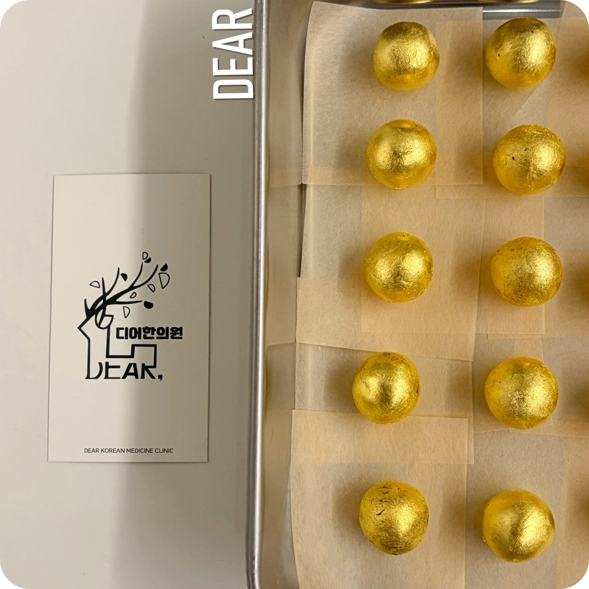

10월에 들어서면 수험생이 있는 집의 저녁은 조금 조용해집니다. 모의고사 성적표는 한 달에 한 번 오는데, 아이 방의 불이 꺼지는 시각은 그보다 자주 늦어집니다. 늦은 밤 물 마시러 나온 아이의 얼굴을 보고 방으로 돌아온 부모님은 대개 검색창에 같은 말을 적습니다.
‘수험생 공진단.’
공부는 대신해 줄 수 없으니 몸이라도 챙겨 주고 싶은 마음이고, 그 마음은 틀리지 않았습니다. 그런데 막상 알아보기 시작하면 가격은 몇 배씩 차이가 나고, 같은 이름을 단 상자가 온라인에도 약국에도 한의원에도 있고, 언제부터 먹여야 하는지는 파는 곳마다 말이 다릅니다.
그래서 한 번 나누어 볼 필요가 생깁니다. ‘수험생 공진단을 먹인다’는 한 문장 안에는 사실 네 가지 결정이 겹쳐 있습니다. 무엇을 먹일지, 우리 아이의 어떤 상태에 먹일지, 언제 시작할지, 얼마나 어떻게 먹일지입니다. 공진단은 한 환이지만, 그 한 환 앞에 놓인 결정은 네 개인 셈입니다.
같은 ‘공진단’이면 같은 약일까요?
공진단(拱辰丹)은 녹용·당귀·산수유·사향 네 가지 약재를 중심으로 구성되는 전통 처방입니다. 이 가운데 가격과 성격을 가장 크게 가르는 것은 사향(麝香; 사향노루의 향낭에서 얻는 약재로, 주성분은 무스콘)입니다.
공진단이라는 명칭은 아무렇게나 쓸 수 없습니다.
대부분 모르시는 것이 있는데, ‘공진단’이라는 명칭 자체를 아무 제품이나 상품에 붙일 수 있는 것이 아닙니다.
식품이나 건강 기능성식품에서 동일한 명칭을 사용하는 것은, 전문가의 판단하에 처방된 ‘진짜’와 오인될 수 있어서 법적으로 제한하고 있습니다.
그렇기에 실제로 인터넷에서 마주하는 것들은
OOOO공진환
곤진단
사향환
이런 형태로 이름을 유사하게 만들어서 판매하는 경우가 흔합니다.
대충 읽었을 때는 비슷하게 느껴지실 수 있지만 법적인 기준에서도, 개념적인 부분에서도 완전히 다른 영역입니다.
시중에는 사향 대신 목향이나 침향을 넣고 ‘목향공진단’, ‘침향공진단’이라는 이름을 붙인 제품이 있습니다. 목향과 침향은 사향과 기원도 성질도 다른 약재이므로, 이름에 공진단이 붙어 있다는 이유만으로 같은 처방이라고 보기는 어렵습니다. 수험생 공진단의 가격이 몇 배씩 벌어지는 이유도 대부분 여기서 시작됩니다.
디어한의원에서 공진단이라는 이름으로 처방하는 공진단에는 모두 사향이 들어갑니다. 정식 수입 절차와 CITES(멸종위기 야생동식물 국제거래 협약) 관련 서류가 확인된 사향 원료를 쓰고, 조제에 들어가기 전 원료의 상태를 김민지 대표원장이 직접 확인합니다. 완제품을 외부에서 들여오지 않으며, 미리 대량으로 만들어 쌓아 두지 않고 처방이 정해진 만큼만 원내에서 소량씩 조제합니다.

제가 만든 공진단이라서 더 예쁜 것 같습니다. 효과는 두말할 것도 없으실 겁니다.김민지 대표원장 · 디어한의원 원내 조제
사향 함량을 무엇으로 확인하는지, 가격이 어디에서 갈리는지는 공진단 효능 칼럼에, 원내 조제 과정은 공진단 조제 칼럼에 따로 정리해 두었습니다.
우리 아이의 피로는 어떤 피로일까요?
부모님이 보는 것은 ‘지쳐 보이는 아이’입니다. 그런데 그 모습 안에도 서로 다른 피로가 섞여 있을 수 있습니다. 며칠 몰아서 늦게 잔 뒤의 피로가 있고, 몇 달째 잠이 조금씩 모자라 쌓인 피로가 있습니다. 둘은 겉으로 같은 얼굴을 하고 있지만 회복되는 방식이 다릅니다.
한국 수험생에게는 뒤쪽이 흔합니다. 질병관리청이 2025년 전국 중·고등학생 약 6만 명을 조사한 청소년건강행태조사에서 주중 평균 수면시간은 남학생 6.6시간, 여학생 5.9시간이었습니다. 잠을 자고 나서 피로가 충분히 풀린다고 답한 비율은 남학생 28.3%, 여학생 16.9%에 그쳤습니다.
연한 초록 구간은 미국수면의학회가 13~18세에게 권하는 하루 8~10시간입니다. 막대는 질병관리청 2025년 청소년건강행태조사의 중·고등학생 주중 평균 수면시간입니다. 중학생까지 포함한 평균이라 고3 교실에서는 더 짧을 가능성이 큽니다.
잠이 모자란 상태가 한 주만 이어져도 머리는 분명하게 반응합니다. 싱가포르 연구진은 상위권 고등학교 학생 56명을 기숙 환경에서 두 무리로 나누어, 한 무리는 일주일 동안 매일 5시간, 다른 무리는 9시간씩 잠자리에 들게 했습니다. 5시간 무리에서는 주의를 유지하는 힘과 작업기억(working memory; 정보를 잠시 머릿속에 붙잡아 두고 다루는 능력), 실행기능이 날이 갈수록 떨어졌습니다. 더 눈에 띄는 대목은 그다음입니다. 이틀 동안 9시간씩 푹 재운 뒤에도 주의력과 졸림은 처음 상태로 돌아오지 않았습니다.
주말에 몰아 자면 괜찮아질 것이라는 기대가 잘 맞지 않는 이유가 여기에 있습니다. 그래서 디어한의원의 수험생 공진단 상담은 아이가 실제로 몇 시에 자고 몇 시에 일어나는지, 끼니와 소화는 어떤지, 이미 먹고 있는 약이나 홍삼 같은 건강식품이 있는지를 확인하는 데서 시작합니다. 그 확인을 바탕으로 아이의 체격과 컨디션에 맞는 구성과 환수를 정합니다. 정해진 상자를 고르는 방식이 아니라 먹을 아이에 맞춰 짓는 방식입니다.
언제부터 먹이면 될까요?
공진단을 사람에게 직접 먹여 본 임상시험은 두 가지가 대표적입니다. 두 연구는 서로 다른 피로를 대상으로 했고, 그 차이가 수험생에게는 오히려 쓸모 있는 정보가 됩니다.
FIGURE 02 · TWO TRIALS공진단이 움직인 곳은 잠이 갑자기 깎인 며칠이었습니다
2018 · 급성 피로
이틀 동안 하루 4시간만 잔 성인
대상
건강한 성인 23명, 입원 상태에서 위약과 교차 복용
조건
이틀 동안 밤 2시부터 6시까지만 수면
변화
활성산소 수치 감소, 잠드는 어려움 감소, 1기 참여자의 피로 척도 개선
잠이 깎인 시기에 몸이 버티는 쪽으로 움직였습니다.
2024 · 만성 피로
6개월 넘게 피로가 이어진 성인
대상
원인을 알 수 없는 만성 피로 성인 90명, 무작위 배정
조건
공진단 4주 복용
변화
전체 피로 점수는 위약과 크게 벌어지지 않음, 사회적 기능 점수 4주째 개선
몇 달 쌓인 피로에서는 4주 복용으로 큰 폭의 변화가 나오지 않았습니다.
두 연구 모두 성인을 대상으로 했습니다. 연구에 쓰인 공진단의 조성과 복용량은 개별 처방과 다를 수 있습니다.
2018년 국내 연구진은 건강한 성인 23명을 입원시켜 이틀 동안 밤 2시부터 6시까지, 하루 4시간만 자게 했습니다. 공진단을 먹은 기간에는 위약을 먹은 기간과 비교해 몸의 산화 스트레스를 보여 주는 활성산소 수치가 낮아졌고, 잠드는 데 걸리는 어려움이 줄었으며, 1기 참여자에게서는 피로 척도도 좋아졌습니다. 잠이 갑자기 깎이는 시기에 몸이 버티는 쪽으로 공진단이 움직였다는 결과입니다.
2024년 연구는 6개월 넘게 원인을 알 수 없는 피로가 이어진 성인 90명에게 공진단을 4주 동안 먹였습니다. 이때는 전체 피로 점수가 위약과 크게 벌어지지 않았고, 삶의 질 설문 가운데 사회적 기능 항목이 4주째에 좋아졌습니다.
두 결과를 나란히 놓으면 수험생에게 필요한 답이 보입니다. 연구에서 공진단이 움직인 곳은 잠이 갑자기 깎인 며칠이었습니다. 그러니 수험생 공진단도 몇 달 내내 먹이는 약으로 두지 않고, 잠이 가장 크게 깎이는 구간에 맞춰 씁니다. 수능 직전의 몇 주가 바로 그런 구간입니다. 마지막 모의고사와 막판 정리가 겹치면서 잠은 한 번 더 줄어듭니다.
결국 시작 시점은 수능 날짜에서 거꾸로 세어 정하게 됩니다. 여기에 하나를 더 셈에 넣어야 합니다. 디어한의원은 상담으로 처방을 정한 뒤에 조제를 시작하므로, 상담 날짜와 받아 가시는 날짜 사이에 조제하는 시간이 들어갑니다. 수능이 11월 19일이니, 그 주간에 맞추려면 상담은 여유 있게 잡는 편이 낫습니다. 상담 때 수능 날짜와 그 전에 있는 중요한 일정을 먼저 말씀해 주시면 남은 기간에 맞춰 무엇을 어떻게 준비할지 함께 짭니다.
얼마나, 어떻게 먹이면 될까요?
몇 환을 언제 먹일지는 앞에서 확인한 아이의 상태와 일정으로 정해집니다. 아침 등교 전에 먹이기 어려운 아이도 있고, 속이 예민해 빈속에 먹이기 곤란한 아이도 있으니, 복용 시간과 방법은 처방과 함께 구체적으로 안내해 드립니다.
한 가지만 미리 챙겨 두시면 좋습니다. 먹이기 시작하기 전 일주일 동안 아이가 잠든 시각과 일어난 시각, 그리고 유독 힘들어 보였던 날을 적어 두시는 것입니다. 복용을 시작한 뒤 무엇이 달라졌는지 비교할 기준이 생기고, 상담에서도 ‘요즘 많이 피곤해해요’라는 한 문장보다 훨씬 많은 것을 알려 줍니다.
부모님이 하실 수 있는 일
처음 검색창에 적었던 말로 돌아가 보겠습니다.
‘수험생 공진단.’
그 한마디 안에는 무엇을, 어떤 상태의 아이에게, 언제부터, 얼마나 먹일지가 겹쳐 있었습니다.
무엇을사향이 든 공진단인지, 누가 어디서 조제했는지
누구에게아이가 실제로 몇 시간 자는지, 소화와 복용 중인 것
언제부터수능 날짜에서 거꾸로, 조제 기간까지 셈해서
얼마나아이 체격과 일정에 맞춘 환수와 복용 시간
네 가지가 모두 정해지면 공진단은 막연히 좋다는 약에서, 우리 아이의 마지막 몇 주를 위해 날짜에 맞춰 지은 약이 됩니다.
공부는 대신해 줄 수 없습니다. 하지만 아이의 잠을 일주일 적어 오시는 일과, 수능 날짜를 들고 상담을 잡아 두시는 일은 지금 부모님이 하실 수 있습니다. 수능까지 두 달이 채 남지 않았습니다.
자주 묻는 질문
고3 아이에게 공진단을 먹여도 되나요?
먹을 아이의 상태를 먼저 확인한 뒤에 정합니다. 수면과 식사, 소화, 이미 복용 중인 약과 건강식품을 확인하고, 아이의 체격과 컨디션에 맞춰 구성과 환수를 정해 원내에서 조제합니다.
홍삼이나 비타민을 먹고 있는데 같이 먹여도 되나요?
먹고 있는 제품의 이름과 기간을 상담 때 함께 말씀해 주십시오. 무엇을 얼마나 먹고 있었는지가 지금 필요한 구성을 정하는 데 실제로 영향을 줍니다.
수능 직전에 시작해도 늦지 않을까요?
상담 후 처방을 정하고 조제하는 과정이 있어, 시험 주간에 맞추려면 여유 있게 상담을 잡으시는 편이 낫습니다. 수능 날짜와 그 전의 주요 일정을 먼저 말씀해 주시면 남은 기간에 맞춰 준비합니다.
수험생 공진단 가격은 왜 곳마다 다른가요?
사향의 사용 여부와 함량, 약재의 등급, 조제 방식과 조제 시기에서 갈립니다. 자세한 기준은 공진단 효능 칼럼에 정리해 두었습니다.
참고문헌
Son MJ, Im HJ, Ku B, et al. An herbal drug, Gongjin-dan, ameliorates acute fatigue caused by short-term sleep-deprivation: a randomized, double-blinded, placebo-controlled, crossover clinical trial. Front Pharmacol. 2018;9:479. doi:10.3389/fphar.2018.00479
Choi JY, Choi B, Kwon O, et al. Efficacy and safety of herbal medicine Gongjin-Dan and Ssanghwa-Tang in patients with chronic fatigue: a randomized, double-blind, placebo-controlled, clinical trial. Integr Med Res. 2024;13(1):101025. doi:10.1016/j.imr.2024.101025 · 정정: Integr Med Res. 2025;14(4):101175. doi:10.1016/j.imr.2025.101175
Paruthi S, Brooks LJ, D'Ambrosio C, et al. Recommended amount of sleep for pediatric populations: a consensus statement of the American Academy of Sleep Medicine. J Clin Sleep Med. 2016;12(6):785–786. doi:10.5664/jcsm.5866
Lo JC, Ong JL, Leong RL, Gooley JJ, Chee MW. Cognitive performance, sleepiness, and mood in partially sleep deprived adolescents: the Need for Sleep Study. Sleep. 2016;39(3):687–698. doi:10.5665/sleep.5552
 03RESTORE · 공진단청담에서 찾는 공진단, 포장보다 먼저 볼 것들귀한 분께 드릴 한 환이라면, 금빛 안에 무엇이 어떻게 담기는지부터 확인해야 합니다.칼럼 읽기 →
03RESTORE · 공진단청담에서 찾는 공진단, 포장보다 먼저 볼 것들귀한 분께 드릴 한 환이라면, 금빛 안에 무엇이 어떻게 담기는지부터 확인해야 합니다.칼럼 읽기 →